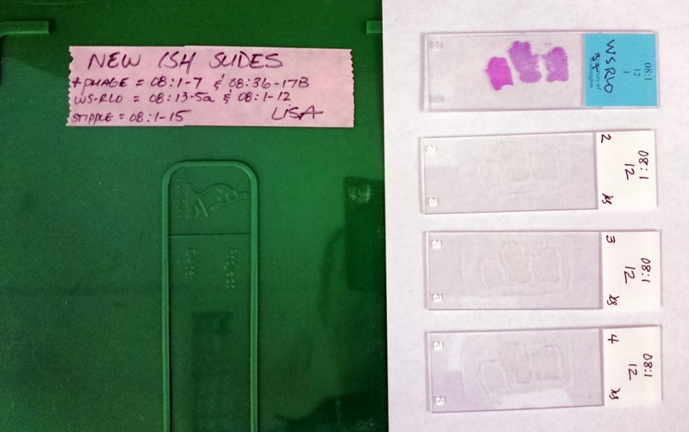
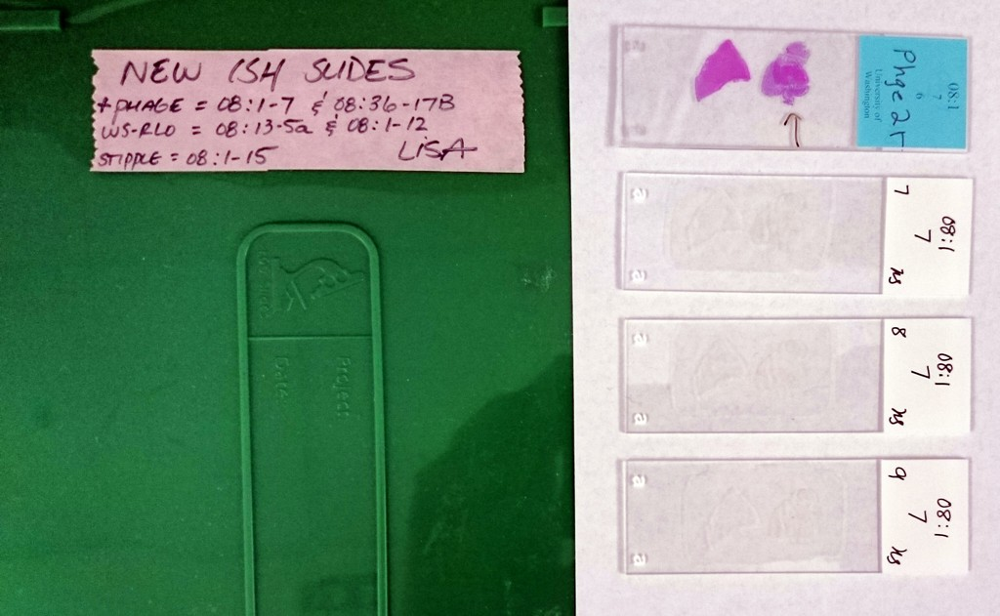
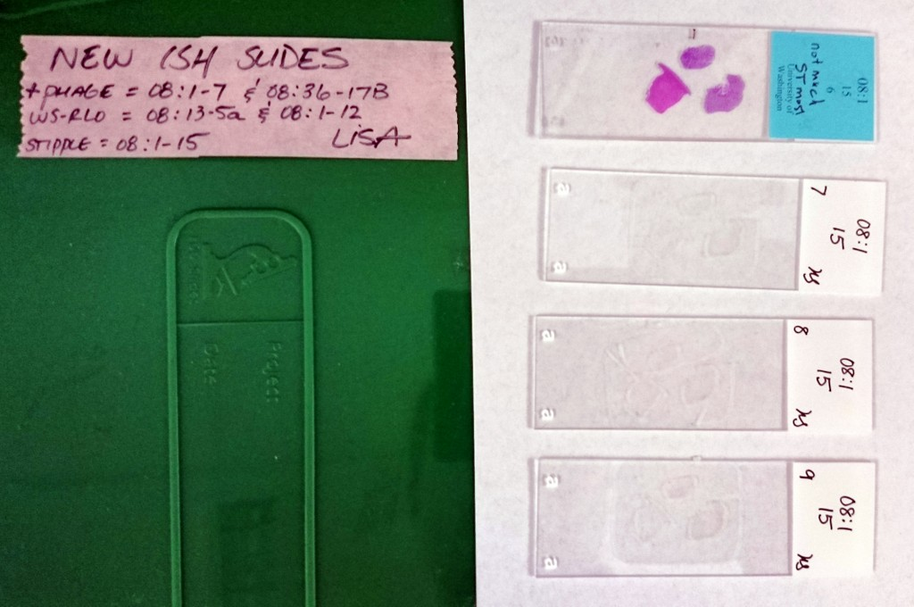
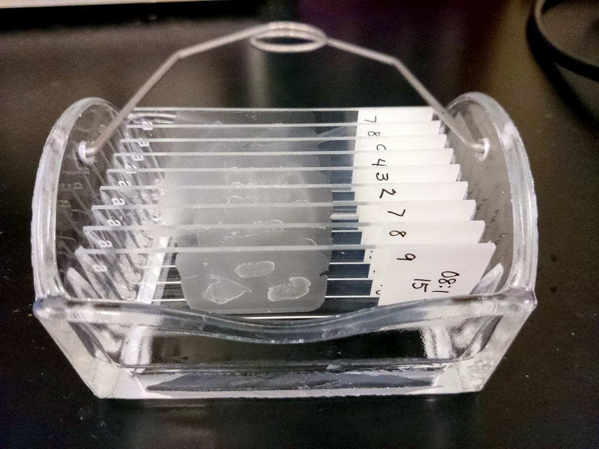
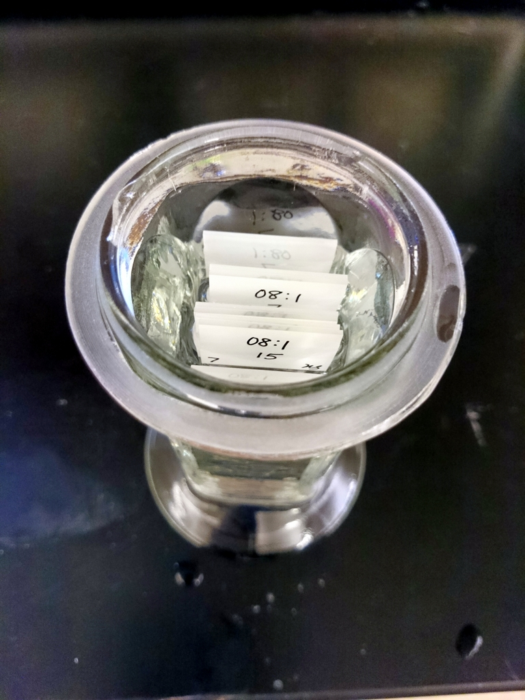
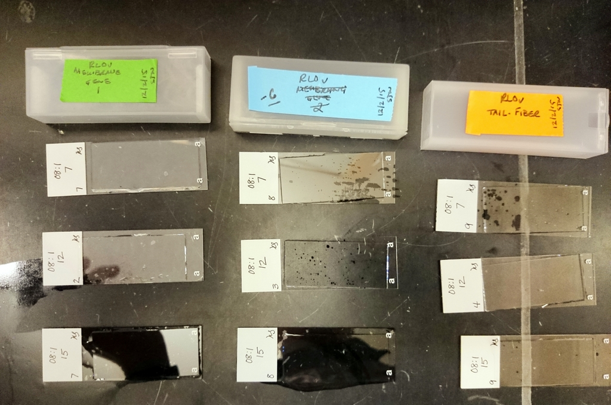

To test out the viability of
these RLOv ISH probes (from 20151109)
and not waste black abalone slides if this doesn’t work, I selected three unstained red abalone post-esophagus sections:
RLO – NO PHAGE
-
08:1-12-2
-
08:1-12-3
-
08:1-12-4
RLOv
-
08:1-7-7
-
08:1-7-8
-
08:1-7-9
RLO STIPPLED – NO PHAGE
-
08:1-15-7
-
08:1-15-8
-
08:1-15-9



All slides were processed in a single, horizontal glass slide incubator (200mL), unless otherwise noted.

All steps were conducted at room temperature (RT), unless otherwise noted.
DEPARAFFINIZATION & REHYDRATION
-
All slides were deparaffinized with three changes of xylene (SafeClear II; Fisher) for 10mins each.
-
Slides were hydrated with a graded ethanol series (100%, 100%, 80%, 70%, 50%) for 3mins each.
-
Slides were rinsed with molecular grade H2O.
PREHYBRIDIZATION
-
Tissue sections were equilibrated in Tris Buffer (0.2M Tris-HCl, 2.0mM CaCl, pH = 7.2) for 5mins.
-
Tissues were permeabilized for 1.5hrs in preheated 50ug/mL Proteinase K (Qiagen) in Tris Buffer @ 56C.
-
Slides were rinsed with 1x PBS three times, 10mins each.
-
Slides were incubated 30mins in 30mL Prehybridization Buffer (50% deionized formamide, 4x SSC) @ 53C in a cylindrical glass slide incubator due to limited volume of deionized formamide available:

-
Prepared probes by boiling 3mins and immediately incubating in ice water bath for 30mins.
-
Slides were rinsed with 2x SSC and air dried for 5mins.
-
Probes were diluted 1:300 in 1000uL of Prehybridization Buffer. All three negative control probes (indicated by “-C” in subsequent labeling) were combined into a single dilution.
NOTE: RLOv Membrane Gene 2 probe was ruined because boiling water got into the tube during denaturation. This didn’t happen to any of the other tubes that were all boiled at the same time. Not sure what happened. However, this may have worked out OK because I did not pull enough slides to accomodate the negative control probes. So, now that I’m not able to test three probes, I can use the negative control probes!
HYRBIDIZATION
-
300uL of probe solutions and cover slip were added to the following slides:

-
The three groups of slides were placed into separate slide cases and a 1mL of Prehybridization Buffer was added to each case (to maintain high humidity during incubation).
-
The cases were incubated on their sides O/N @ 53C.
{kind=link}
{kind=link}
{kind=link}
{kind=link}
{kind=link}
{kind=link}